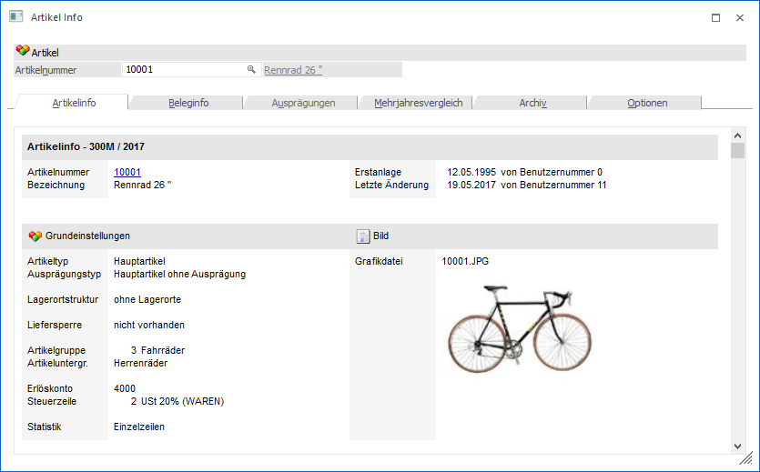
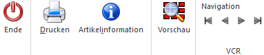

In dem Menüpunkt…
1 WinLine FAKT
1 Stammdaten
1 Artikelstammdaten
1 Artikelinfo
… wird eine Übersicht über den ausgewählten Artikel ausgegeben.
Hinweis
Die Artikelinfo kann auch im Artikelstamm durch Anwahl des "Info"-Buttons oder über den Eintrag im Kontextmenü "Artikelinformation" aufgerufen werden.

Ø Artikel
Im Feld "Artikel" kann der zu betrachtende Artikel hinterlegt werden.
Anschließend ist das Fernster in die folgenden Register unterteilt, welche in den nachfolgenden Kapiteln beschrieben werden:
ü Register "Mehrjahresvergleich"
Buttons

Ø Ende
Durch Anklicken des Buttons "Ende" wird das Fenster geschlossen.
Ø Drucken
Durch Anwählen des Drucker-Symbols wird der Inhalt des gerade aktiven Registers ausgedruckt.
Ø Artikelinformation
Durch Anklicken des Buttons "Artikelinformation" wird das Programm "Artikelinformation" der WinLine INFO geöffnet, wo weitere Daten des gerade gewählten Artikels angezeigt werden.
Ø Vorschau
Durch Aktivierung des Buttons "Vorschau" wird das ausgewählte Archivdokument (Register "Archiv") direkt in einem Vorschau-Modus angezeigt.
Ø VCR-Buttons
Über die sogenannten VCR-Buttons, welche in jedem Register zur Verfügung stehen, kann durch Mausklick zwischen den Datensätzen geblättert werden.
ü  Damit kann der
erste Datensatz angesprochen werden.
Damit kann der
erste Datensatz angesprochen werden.
ü  Damit kann der
vorherige Datensatz angesprochen werden.
Damit kann der
vorherige Datensatz angesprochen werden.
ü  Damit kann der
nächste Datensatz angesprochen werden.
Damit kann der
nächste Datensatz angesprochen werden.
ü  Damit kann der
letzte Datensatz angesprochen werden.
Damit kann der
letzte Datensatz angesprochen werden.
Hinweis
Beim Blättern zwischen den Artikel-Datensätzen werden Ausprägungen standardmäßig "überblättert", d.h. es wird von einem Hauptartikel zum nächsten geblättert. Sollten auch Ausprägungen berücksichtigt werden, so muss beim Blättern zusätzlich die STRG-Taste gedrückt werden.